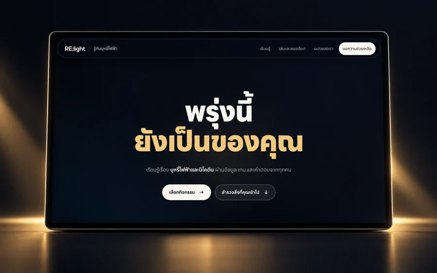
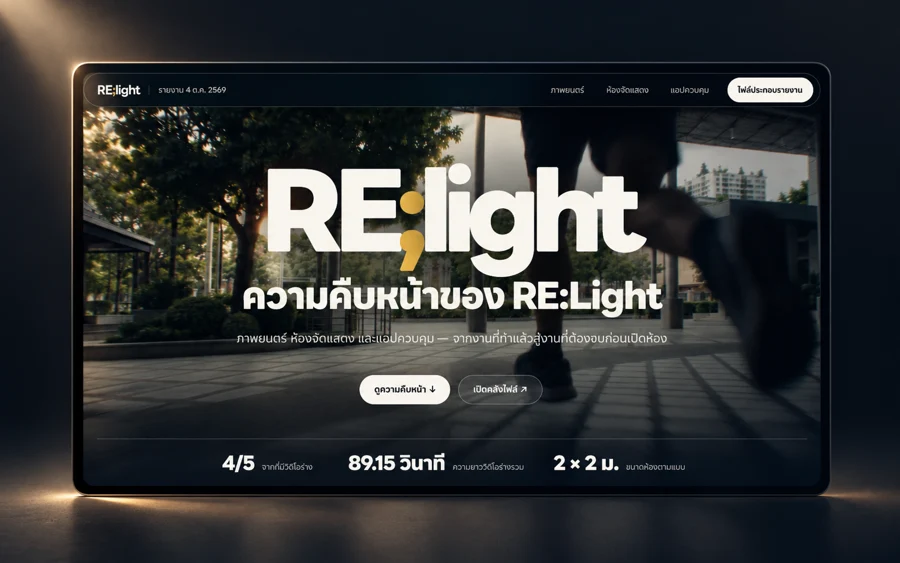
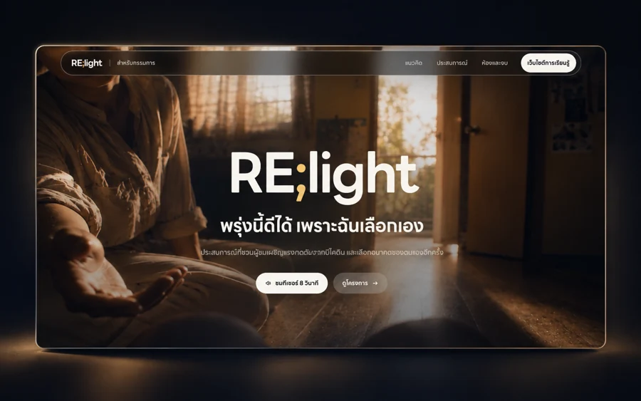
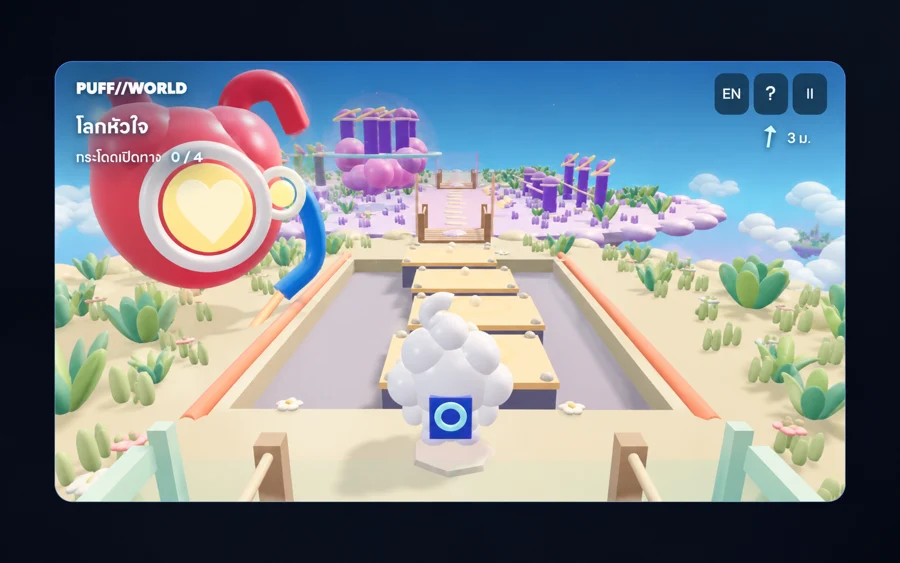
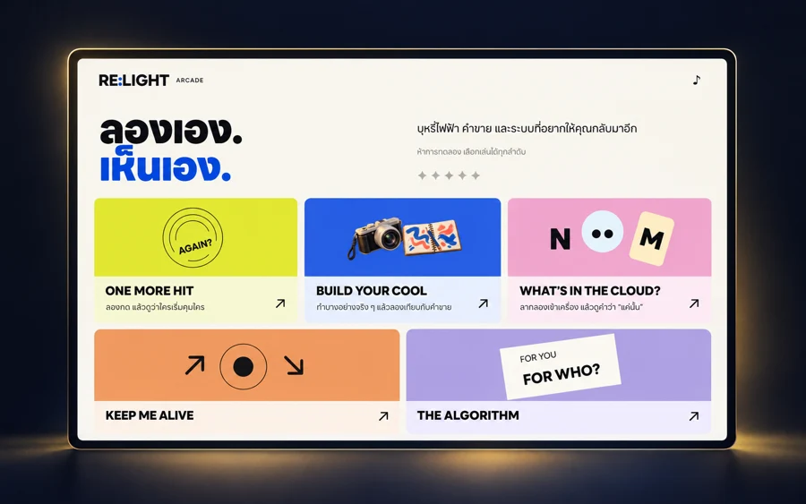
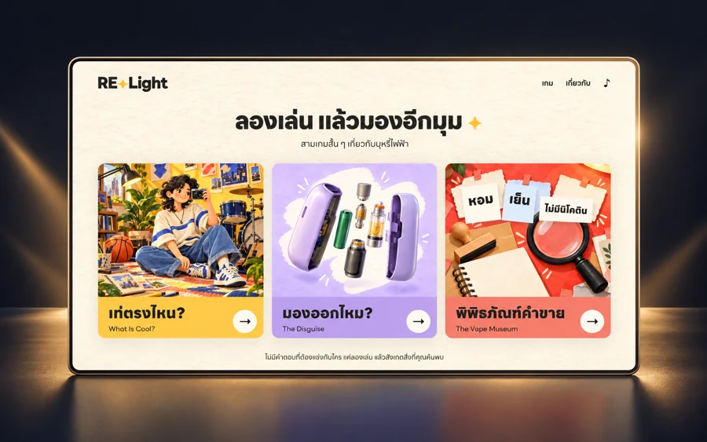
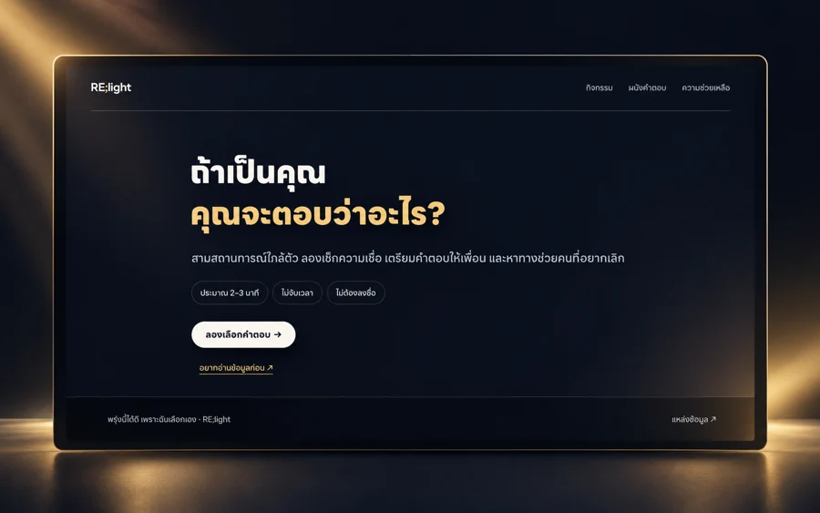
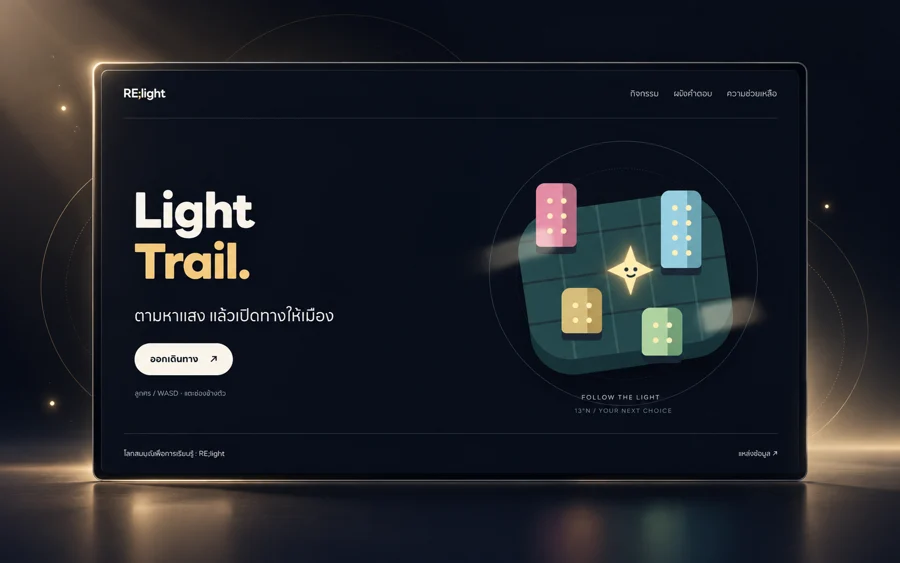
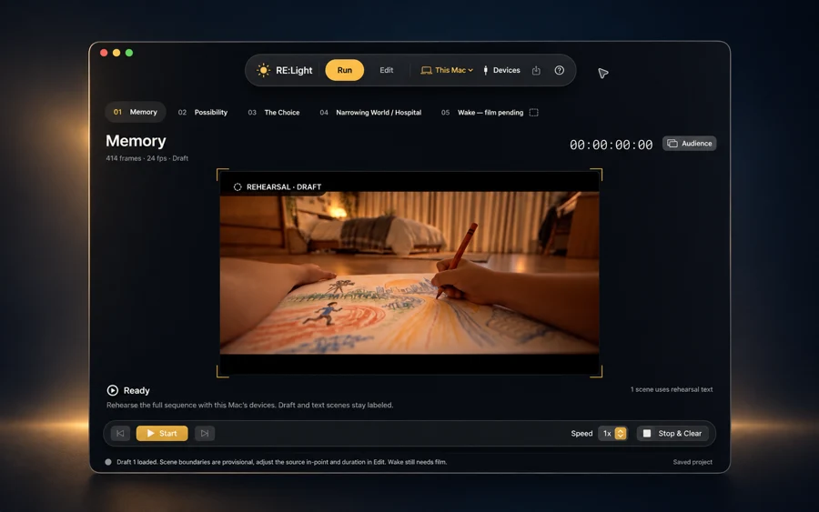

ทุกทางเข้า
อยู่ที่นี่
เว็บไซต์ เกม และแอปของ RE;light เปิดใช้หรือดาวน์โหลดได้เลย
เว็บไซต์
ลิงก์เข้าเว็บทั้งหมด
พร้อมไฟล์สำหรับดาวน์โหลด

Production Progress
รายงานความคืบหน้า หนัง แอป และห้อง

RE:Light Pitch
เว็บไซต์นำเสนอโครงการ
เกม
เปิดเล่นผ่านเบราว์เซอร์
หรือดาวน์โหลดไว้เปิดบนเครื่องคุณ

PUFF//WORLD: INSIDE
เกมผจญภัย 3D · สำหรับคอมพิวเตอร์

RE:Light Arcade
5 เกมทดลอง · มือถือและคอมพิวเตอร์

RE:Light Mini Games
3 เกมรุ่นแรก · มือถือและคอมพิวเตอร์

ถ้าเป็นคุณ จะเลือกอย่างไร?
เกมสามสถานการณ์ในเว็บ Education

Light Trail
สำรวจสามเมือง เก็บแสง แล้วเลือกเส้นทางของคุณ
แอปสำหรับ Mac
ดาวน์โหลดตัวติดตั้ง
แล้วเปิด RE:Light บนเครื่องของคุณ

RE:Light Native
เวอร์ชัน 2.1.1 · Apple silicon · macOS 14 ขึ้นไป
.dmg · 125.6 MBวิธีติดตั้งแอป
เปิด .dmg → ลากแอปไป Applications → เปิดแอป รุ่นนี้ยังไม่ notarized หาก macOS บล็อก ให้เปิด System Settings → Privacy & Security → Open Anyway หลังตรวจสอบว่าเป็นไฟล์จากหน้านี้
วิธีเปิด Website ZIP และ Source ZIP
Website ZIP: แตกไฟล์ แล้วเปิด Start Website.command บน Mac ที่มี Python 3 ส่วน Education Source ZIP ต้องตั้งค่า backend ก่อนรัน